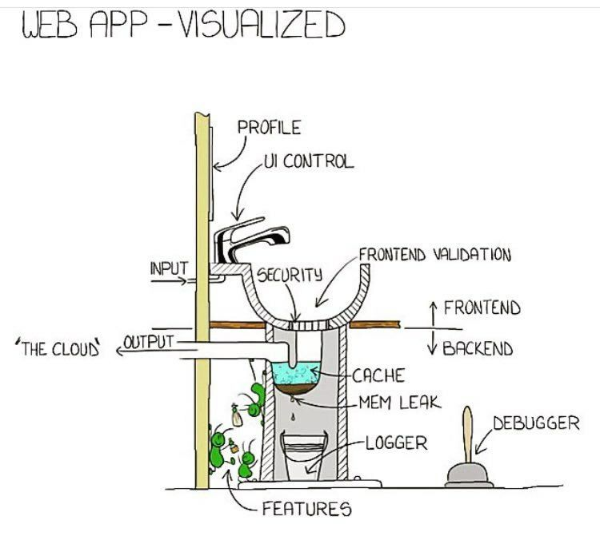
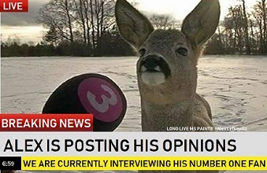

(If you're a recruiter, email me first. Do not call me if I don't
reply immediately. And please click here.) LinkedIn
Alexander Montana Lefkowitz
1986 - 2018
Alex "aml51z" Lefkowitz passed away on July 22nd, 2018. He was best known around the internet for creating Flash games, his first and arguably most well known was Raging Flight, a sci-fi shooting game inspired by Combat Instinct.
He achieved some infamy with his later penchant for doing games in a shock-jock style vein, these include Sniper's Revenge and Tsunami Lootup, both respectively exploiting the media frenzy around the 2002 DC sniper attacks and 2004 Indian ocean tsunami.
Uniwar: Lost Civilization would be his last big game before disappearing from the limelight. It was something of a return to form: a sci-fi themed shooting game created together with long time friend Brian Fox (Doomhammr).
Several other lesser known games include retronoid, an arkanoid clone, and 3D pong. The last game that he's known to have made was called Brimstone.
Alex was a complex character who often presented himself as an overconfident contrarian online, but those who spent any meaningful time with him knew him as he was: just another guy who always tried to do the right thing.
This is an archive of all his known work that was able to be saved. Brimstone is currently missing from this archive, as well as an early version of Raging Flight 2 that was circulated around the flashstyle.net community. If you have copies of these, then please share them!
The Adobe Flash Player is required to play the games.
It saddens us to see you go so soon, Alex, but from all of us: we hope that you rest well.
Good Night.
Below is a collection of Alex's previous Flash projects, lovingly scraped from the furthest corners of the internet and preserved here as if it were the finest of wines.
You will need the flash player to play these games or watch these.
For Alex's web work, click here for Front End (Design) and here for Back End (Server Side / Programming)
Snipers Revenge American Operation: War on Iraq Raging Flight Space Skimmer Niggzwheelz Offroad Derby UWLC Flash 8 Tech Demo 3D Pong Retronoid FS Killer Cheeto Tsunami Loot-up
Snipers Revenge (10/27/2002)
Hello everybody, my name is Alexander Lefkowitz, this webpage is more or less a blog/portfolio/insight type page I created for anything me related. I started it in 2005 and over time have have settled on what you see here which I hope gives you an idea of who I am, my personality, and my UI developer career.
I’m a programmer, analyst, and developer. It’s my passion; it’s my means of art and expression. Web programming is more than a tool; to me it’s how an idea turns into reality.
Whether on my own or in collaboration my goal is to make something that exceeds expectations.
I'm a web game developer currently sinking my teeth into mobile game developement!
And finally I'm a humor writer. Involved in various unrelated writing endeavours.
Please Check out my front end samples.
Note: This site was coded back in 2012 so although not terrible is very simple and uses no advances
frameworks other then a little jQuery for some quick fade effects that work on all browsers.
After graduating High School I went to many technical institutes for computers, CTECH for Principals of Technology, C++ and Javascript, NETCOM in Manhattan for C++, C#.NET, and Network+. I have also attended Rockland Community College for networking and programming.
I have also worked in IT departments for many different companies and have acquired 9+ years of industry and hands on experience.
I have learned and used a variety of different computer programming and scripting languages.
As of now I know:
Object Oriented Javascript, jQuery, JSON, XML, CSS2, CSS3, SASS, LESS, XHTML, HTML, HTML5, HTML5
Video, Smarty, TWIG, Yahoo! Widgets/Konfabulator, SWFobject, Freewheel, Conviva, and a working
knowledge of Angular.js, D3, Dojo, PHP, C# and C++.
I am currently learning and have some experience with React and various tools in the React tech stack. I am also learning Vue.js
Hello as you probably guessed I'm Alexander Lefkowitz
I'm a US Citizen, legally able to work, my DOB is 5/12/1986, check the other sections here for skills info regarding what languages and tech stacks I know for you to use when presenting me in more detail but in a nutshell I know:
- JavaScript (10 years)
- Object Oriented aspects of JavaScript (6 years)
- jQuery (8 years)
- JSON (8 years)
- XML (8 years)
- CSS (14 years)
- SASS (5 years)
- LESS (5 years)
- XHTML (8 years)
- HTML (14 years)
- React (4 months work experience)
- Angular (1 month practice)
Overall I've been a UI developer since 2006 if the framework has only been around for just a few (such as React).
I am interested in UI, UX, UI architecture, and general UI development and engineering. HTML/CSS wireframes also works but might be under my pay grade.
Since I live in the New York area I can readily work in New York City, Jersey City, NJ, Hoboken, and the immediate area that I can get to via train and bus. Remote work is also definitely a plus.
I am willing to work elsewhere and even another country but this must be funded by the agency or company willing to hire me and must be provided prior to my travel, NO EXCEPTIONS!
I have references but will not be giving their info out until I feel it's worth it.
I value my time and talk to recruiters all the time. Please be mindful. My phone is generally on me all day. If I gave all my info out to every recruiter that called me I'm sure I'd have my identity stolen by now. Over the years I've heard it all so to make it easier here is a list of things that will make me not want to answer your calls, call you back, turn down the job almost immediately, or might make me want to block you:
- Leaving a message without an extension or number.
- Send me the job description to my email.
And immediately call me asking me if I read all 9 paragraphs. - Make me have to research to get back to you.
- Calling me 2 times in a row while I'm currently on the phone,
then 2 times again 5 minutes later. - Calling me 8 times back to back.
- Calling me 8 times back to back, you deny it and when I email you back a
copy of my call log you blame apple for making a lying cellphone. - You send me a screenshot of your desktop in a pinch and I see XXX file names on the desktop.
- Insist that Java and JavaScript are the same thing.
- Tell me to just learn something and submit me without asking.
- Be one of the 10 other recruiters that just are looking for a "JavaScript ninja"
and keep repeating that term. - Say anything even remotely sexist, it tells me alot about your organization.
- Calling me 3 times because you found an "URGENT" requirement even though I haven't responded to the email.
I expect no less then $40 an hour and usually work for $50 to $70 an hour depending on work and location
DO NOT LIE OR MISREPRESENT ME TO CLIENTS, NO THIRD PARTIES, if I have reason to think you or your company is sketchy for any reason I will probably ignore or block you. I will not lie to an employer for you, I will not misrepresent myself to an employer, I will not exaggerate my skills. If you rely on any of these things or find it necessary for the employee to do this then please move on.
That said I would love to speak to you, double so if you are the actual employer. Feel free to give me a ring or text me.
Much of my experience has been through working with hands on projects for designers and project managers. The companies and organizations I have worked for include
- Gartner in Stamford, CT
- ADP in Roseland, NJ
- Droga5 in NYC, NY
- All Things Media in Mahwah, NJ
- CNBC in Englewood Cliffs, NJ
- KM Newspaper in Monroe, NY
- Yeshiva University in NYC, NY
- National Parts Depot in Chester, NY
I have worked with companies through my web hosting company Web Quest Hosting and as an independant contractor.
My resume is available in Microsoft Word format.
Download
Captains Log - 10:55pm - Dec 5th 2017
Hello internet: I'm just gonna leave this here...


Captains Log - 10:55pm - May 6th 2016
I don't like AngularJS 1 and neither should you: Who would have known that once I added what I would loosly call a "UI blog" to my site that an avalanche of things I want to point out to the internet would be greater then my internet patience.
My first experience oddly enough comes from a public facing website, a rather large one I won't mention. While loading I saw {{ expressions in brackets }}. Now maybe I'm oldschool but wasn't the whole point in half the standards I work in now exist so that the user can access content on most devices and software? What if the user uses TOR and can't use JavaScript. I feel that AngularJS is a front-end framework for Java programmers for prototyping purposes.

Another problem I noticed, though I suppose less a problem and more the nature of UI work, is that many times important financial information is being processed on the front end instead of the backend. You should never use JavaScript in any way to handle such important information, only output and experience.
If I wanted to make a virus I would hook my code straight into the injections and directives. Who knows what behind the scenes action is going on.
Captains Log - 5:34pm - May 5th 2016
What's it like being on the internet when your trade involves making websites? I would expect a car machanic to see random things that would go over my head as he drives around traffic, noticing different sounds, behaviors, and who knows what else when it comes to other cars and drivers. Personally my experience with cars involves filling up at the pump and writing "clean me" on the back of dirty SUV windows.
First thing that comes to mind is HOLY CRAP I wrote this site your reading right now back in 2008. The most recent code I added was the Did You Know? section on the bottom.
The second thing I noticed is... wow I got LUCKY deciding to stay with JavaScript and HTML5, although I started out with Flash... and I think Steve Jobs (rip) was too hard on Adobe, I'm glad the world values people who likes to tinker with style sheets and turn browsers into application containers.

But is that what the world wants? Oh JavaScript, you did right with the ECMA standard, but who the hell put Java as the first part of your name?

Sigh....

This is where I post my political ramblings, I'm glad you want to know where I stand on rare posts I write. I reposted all my posts from 2016 and will be putting back 2017 once I pull it from the old database. Thank you for all the interest though!
2016 in a tailspin
10/10/2016 Is this a dream?
 On
November 8th, 2016, the United States voted in Donald Trump as their 45th president, defeating
Hillary Clinton.
On
November 8th, 2016, the United States voted in Donald Trump as their 45th president, defeating
Hillary Clinton.
In the aftermath, progressives are being told that this outcome is their fault. The finger is now on progressives for calling conservatives racists, bigots, sexist, etc. And that the only path forward is to now find common ground with conservatives.
As a centerist I cannot possibly object more vehemently to this. I may share some aspects with progressives but it's more complicated then that and this brings me to their hypocrisy and my next point:
Social Justice Warriors and Snowflakes
There is a serious problem right now on college campuses and from what I see a lot of the YouTube audience. People who have no strong political identity and like hearing quick easy catch-all answers. I loved hearing Ben Shapiro tell a student that "facts don't care about your feelings".
There is a growing regressive left that seeks to restrain and limit all speech and discourse they disapprove of. This often results in shouting down dialogue, discussion, and even comedy is now off-limits. This has the unintended side effect of legitamizing professional trolls like Milo Yiannopoulos.
Being 31 (as of writing this), I grew up during the moral panic around violent video games. You know, games like Street Fighter II and Mortal Kombat. I grew up with the over-zealous FCC looking to scrub the airwaves of any kind of profanity or nudity.
I objected to this, and fought against this. I grew a deep appreciation of the first amendment right to freedom of speech.
The social justice movement is moving us from classic liberalism to just another form of authoritarianism: seeking to control what people can and can't say.
It is truly dangerous and I am very much opposed to this.
Bubble Trouble
There is unquestionably a genuine threat in bubbles. The left foolishly thought they had this race taken care of. This is because they formed circles on social media and only followed the people that agreed with. Any nonconformists were instantly blocked. So obviously, to them, it appeared like an order that Clinton would win the race.
Bubbles are indeed very dangerous. We need to have real discussions with people we disagree with, if we ever hope to find common ground and unite as a people.
There are legitimate grievances on both sides. I am more than willing to engage in a discussion around inheritance tax, healthcare reform, social welfare, drug laws, the size of the military, the size of government, and even heavy-hitting issues like abortion. I understand that someone can disagree with me on these topics and not be wrong, and still have valid grievances.
Trump (oy vey :/)
But then there's Donald Trump. A candidate that ran his campaign on racism, misogyny, bigotry, xenophobia, lies and hatred. A candidate who sought to divide our nation in order to assure his victory.
We now have a president-elect who openly mocked the handicapped, who called Mexicans criminals and rapists, who called for jailing his political opponent, who encouraged another nation to hack and undermine our fair election process, who fat-shamed a female beauty contestant, who bragged about walking in on women in locker rooms, who boasted about how he could "grab women by the pussy" just because he was famous, who has stated that he would nominate Supreme Court justices to reverse marriage equality for gay and lesbian couples, who has promised to rescind all protections for transgender individuals — such as the right to use the bathroom that matches their gender, a man who has defrauded his own charity, who wanted to ban all Muslims from entering the country, and to create a registry for them. A candidate who has declared the greatest threat to the survival of our species — global warming — to be a Chinese hoax. Someone who chose Mike Pence as his running mate — a man who believes in using electro-shock therapy to "turn gay kids straight", and who passed a Jim Crow-era law to allow businesses to discriminate and deny service to gays and lesbians. A religious nut one step away from being a flat earther. A man who refused to accept the results of the election — if he lost, that is ... and claimed the election was rigged against him. A man who wants to allow the further proliferation of nuclear weapons.
This candidate is unlike any other candidate that has run in my entire lifetime. He is irredeemably deplorable. Which is perhaps why Ku Klux Klan has endorsed him and held celebrations upon his victory.
Clinton
Hillary Clinton was a terrible candidate. She colluded with the DNC to steal the primary from Bernie Sanders, which certainly cost us the election. She is a typical career politician, traveling around the country and giving $200,000 speeches to Wall Street executives. Talking about how she has two faces, one for the general public, another for the business elite.
She is not a progressive. She would easily be considered a conservative in the '80s before the Republican party went batshit insane. Today, compared to the rest of the world, she is a center right candidate. She has been late on every socially progressive issue. Only coming around on marriage equality in 2013, after more than half the country approved of them, and the vast majority of her own party.
I do not like Clinton. I did not want another family dynasty in the White House. But she did at least spend her life working to help the poor and minorities to better their lives. Their charitable foundation has done a lot of good in the world.
Yet with all of her flaws — private e-mail server included — she was still the lesser of two evils by an enormous margin in this election.
I write funny things for local articles and some literature I write on the side. Here's a few ramblings people tell me I should post.
- Don't think outside the box. .. Think WITH the box. (What?)
- Save money on doors by getting rid of the walls.
- Every kiss begins with genocide in Africa (Damn it! A political statement was thought of)
- Note to self... Nothing to note.
- Sometimes I wonder if people realize how painfully different they are. Followed by realizing I'm probably painfully not unique myself. Maybe that's a good thing? I'm not a fan of attention.
- Living like you don't have much time to live is like saying live every day like you were bitten by a rabid dog and you're gonna die of rabies. How does that person live? Well probably not very well...
- Hello I am language. English to be exact. Ok bye.
- Rice. The Dinner Cereal!
- Adding "for men" makes a lot of things more interesting or confusing. What the hell is "flowers for men"?
- Things that must be had 100%.... When having a baby you have to have the whole baby... Oh god even 99% of one sounds disturbing. And 101%?
- Just noticed the earth is mostly flooded. What if the Earth is already kinda screwed and we're just used to living in between floods?
- You can't laugh in space. it is impossible because nothing is funny in space.
- If you never get sick, it could be a sign of a rare disease...
- Thinking of a new pickup line: you know what materiel this is? (Grab shirt)...boyfriend material.
- accidentally consented to destroying the universe
- jail is a great place to meet other people interested in crime
- I spent my quarter on righteous living
- If somebody doesn't like themselves, they have no right reproducing, why make another person that may not like themselves
Click near the bottom of this website for more.
I have worked for CNBC, All Things Media, Yeshiva Univercity, National Parts Depot, Droga5, and various agencies.
My particular niche is single page web applications, the majority of the UI work I have done involves my competency in HTML(5), CSS, JavaScript, jQuery, SASS, LESS, JSON, XML, Photoshop, and various other smaller text, font, and debugger tools.
- Bring Your Challenges (interactions, mobile, SEO, some behind the scenes work)
- CompTia Ebook platform (offline for legal reasons)
- Pearson MyFinanceLab Financial Calculator Tutorials (JS and mobile work, some video work)
- JSON Generator / Database creater for car parts diagrams (offline for legal reasons)
- Anagh Tech Site design prototype
- Various CNBC modules, scripts, and sliders (outdated)
- Brocair (OLD)
- Munno's Deli (VERY OLD)
My backend works includes work done in ASP, ASP.NET/C#, javascript and some SQL.
I have worked for Domestic Securities, National Parts Depot, and have consulted for various clients. Most of my work has been for internal applications and kiosks.
A fine online example of my work can be found at National Parts Depot TNPP website.
I have worked on many Flash projects in the past.
I'm currently working on a new project called
Brimstone
- Universal War: Lost Civilization (has over 2.5 million downloads)
http://www.newgrounds.com/portal/view/87004
- 3D Pong
http://www.newgrounds.com/portal/view/260014
- Retronoid FS
http://www.newgrounds.com/portal/view/236072
Most of these are available on Newgrounds but have also been featured on many other popular Flash game web pages such as:
- freeworldgroup.com
- addictinggames.com
- newsandentertainment.com
- smashingames.com
- 2flashgames.com
- 2dplay.com
- agame.com
- flasharcade.com
- funnycrazygames.com
- coolgames.com
- blitzgamer.com
- arcadehaven.net